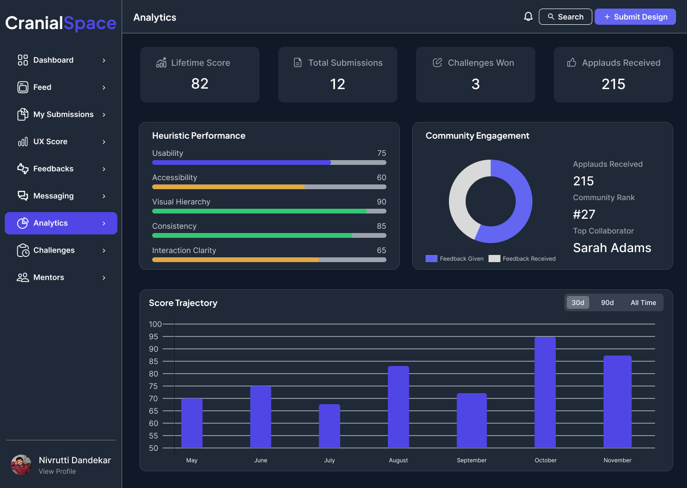
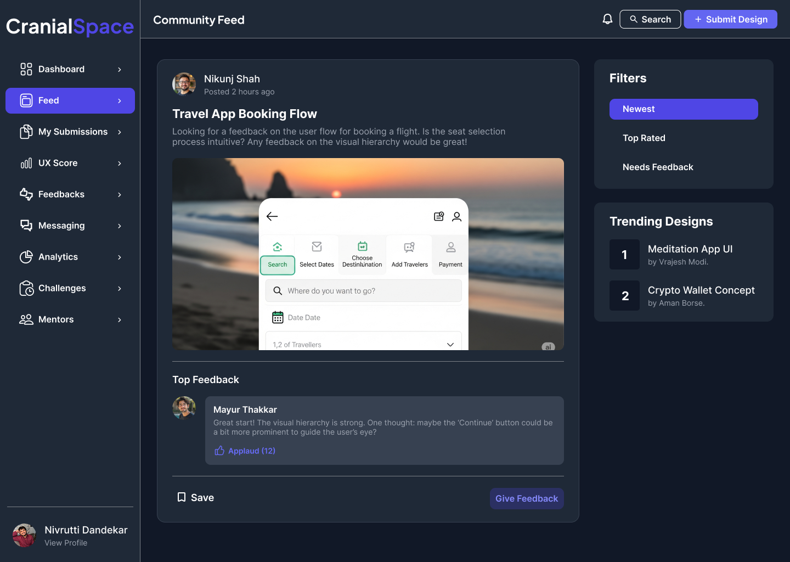
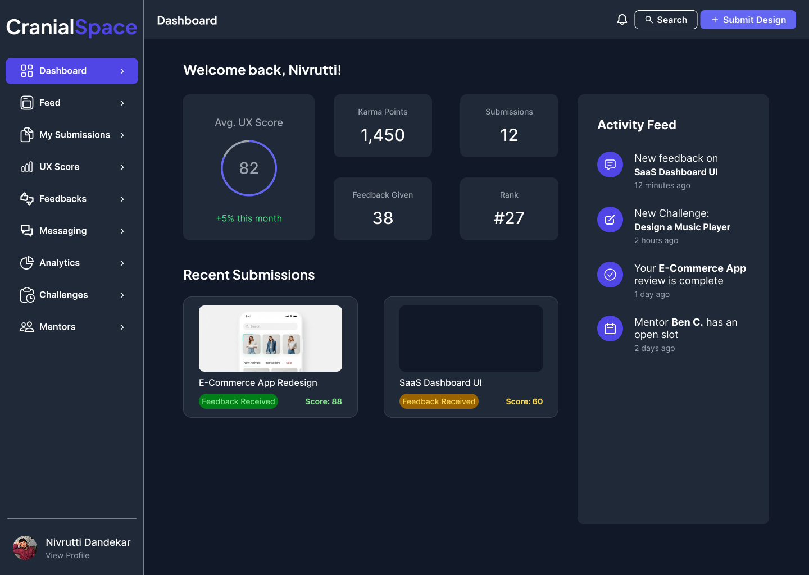
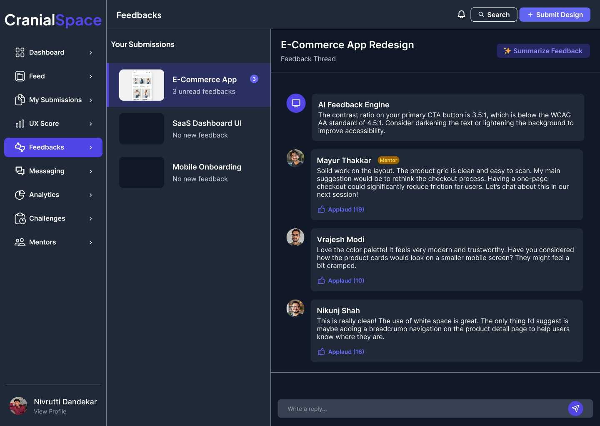

Cranial Space
Cranial Space is a community-driven platform concept designed to help UI/UX designers grow through structured feedback, collaborative learning, and real-world design challenges. The project addresses a common gap in the design community by transforming scattered feedback into meaningful, actionable insights. The vision was to create an ecosystem where designers can continuously improve their craft, build stronger portfolios, and connect with peers through guided learning experiences.
The Challenge
For many aspiring designers, receiving meaningful feedback is one of the biggest barriers to growth. While online communities provide opportunities to share work, feedback is often inconsistent, unstructured, or limited to subjective opinions. Without clear direction, designers struggle to identify weaknesses, measure progress, and confidently build portfolios that reflect their true potential.
Key Challenges:
- Feedback across online communities lacked consistency and structure.
- Designers found it difficult to measure their improvement over time.
- Portfolio reviews often focused on opinions rather than actionable guidance.
- Beginners had limited access to mentorship and constructive critique.
- Learning resources existed, but practical application remained fragmented.
Product Vision
Cranial Space was envisioned as more than a portfolio platform - it was designed as a long-term learning ecosystem for designers.
The product brings together structured critiques, portfolio evaluations, community discussions, mentorship opportunities, and practical design challenges into a single experience. Every feature is intended to help designers receive better feedback, practice consistently, and track their progress over time.
Vision Principles:
- Encourage learning through structured feedback.
- Build confidence through measurable improvement.
- Foster a collaborative and supportive design community.
- Bridge the gap between learning resources and practical application.
- Create opportunities for continuous portfolio development.
Research & Insights
To better understand the challenges faced by designers; I analyzed existing design communities, portfolio platforms, and online learning ecosystems. While these platforms successfully connected designers, many lacked structured guidance that translated feedback into actionable improvement.
Key Insights:
- Feedback quality varied significantly across different communities.
- Designers wanted actionable suggestions rather than generic opinions.
- Most portfolio review focused on presentation rather than design thinking.
- Learning often stopped after consuming content instead of applying it.
- There was an opportunity to connect education, mentorship, and portfolio development into one experience.
Ideation & Product Strategy
The ideation process focused on designing a platform that encourages continuous learning rather than one-time portfolio reviews. Instead of simply showcasing work, the platform was structured around repeated practice, constructive critique, and measurable progress.
Product Strategy:
- AI-assisted feedback to highlight usability and design improvements.
- Community critique sessions that encourage peer learning.
- Guided design challenges based on real-world scenarios.
- Portfolio health reports that help designers identify growth areas.
- Mentor-driven feedback for more personalized learning experiences.
Key Features
Final Design
The final product was designed around clarity, focus, and community engagement. A modular dashboard organizes learning activities, feedback sessions, portfolio reviews, and design challenges into dedicated workspaces, allowing users to quickly navigate between collaboration, practice, and personal development.
Design Highlights:
- Centralized learning dashboards.
- Structured feedback interface.
- Commmunity discussion spaces.
- Progress tracking and analytics.
- Portfolio review workspace.





Product Impact
Cranial Space demonstrates how structured feedback can transform the way designers learn and grow throughout their careers.
Potential Outcomes:
- Faster skill development through actionable critique.
- More confident portfolio creation.
- Stronger collaboration within the design community.
- Increased engagement through recurring challenges.
- Clear visibility into personal growth over time.
Reflections
Cranial Space challenged me to think beyond the interface design and approach problems from a product perspective. Rather than designing isolated screens, I focused on defining a long-term vision, identifying user needs, and building an ecosystem that encourages continuous learning. This project strengthened my understanding of product strategy, community-driven experiences, and designing systems that evolve alongside their users.